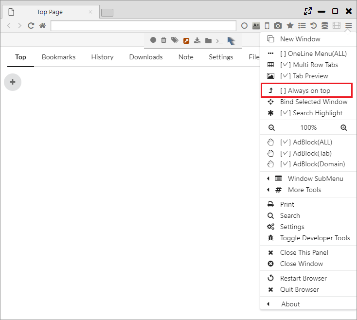
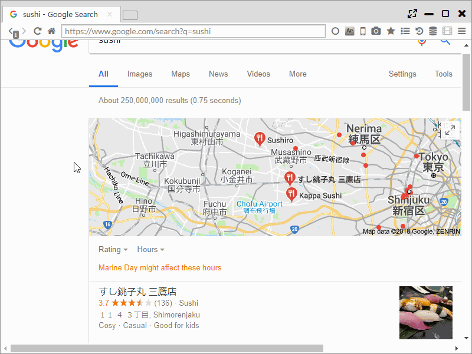

表示切り替え、ウインドウ固定
フルスクリーンモード、常に手前に表示、ウインドウをパネルに固定、モバイル表示(ユーザエージェント変更)、AutoPagerizeなど様々な機能があります。
1. フルスクリーンモード
「画面右上のフルスクリーンボタンをクリック」、「F11キーを押す」、「動画をダブルクリック」のいずれかの操作で、 フルスクリーンモードに入ることができます。
画面上部にマウスカーソルを移動すると、メニューがポップアップで表示され、フルスクリーン状態でも操作が可能になります。

2. 別ウインドウを固定 (Windows、Linuxのみ)
本ブラウザ独自機能で、他アプリケーションのウインドウをブラウザのタブに対して固定化し、 1つのタブ内のアプリケーションのように制御する機能になります。
動画プレイヤーやテキストエディタを固定化し、並行して作業を行うなどの利用方法を想定しています。
「メインメニュー > Bind Selected Window」を選択し、固定化したいアプリケーションをクリックすると、
固定化が開始されます。タブを閉じると固定化が解除されます。

3. 常に手前に表示
「メインメニュー > 常に手前に表示」を選択すると、対象のウインドウが最上面に表示されます。 
4. モバイル表示(ユーザエージェント変更)
メニューバー上の携帯アイコンをクリックすることで、ページ表示をモバイル表示に変更できます。
また、モバイル表示以外のUser Agentにも変更することが可能で、以下のUser Agentを利用できます。
- Nexus P6
- Galaxy S9
- iPhone
- IE6
- IE9
- IE11
- Edge
- Firefox 61
- Opera
- Safari (Mac)
- Chrome 67 (Win)
- Chrome 67 (Mac)
- Chrome 67 (Linux)

5. AutoPagerize
複数ページにわたるWebサイトの次ページを自動で読み込み、継ぎ足し表示を行うブラウザ拡張で、 Sushi BrowserではデフォルトでONになっています。
「設定 > 拡張機能」または、バックグラウンドのメニューバーからOFFにすることができます。 